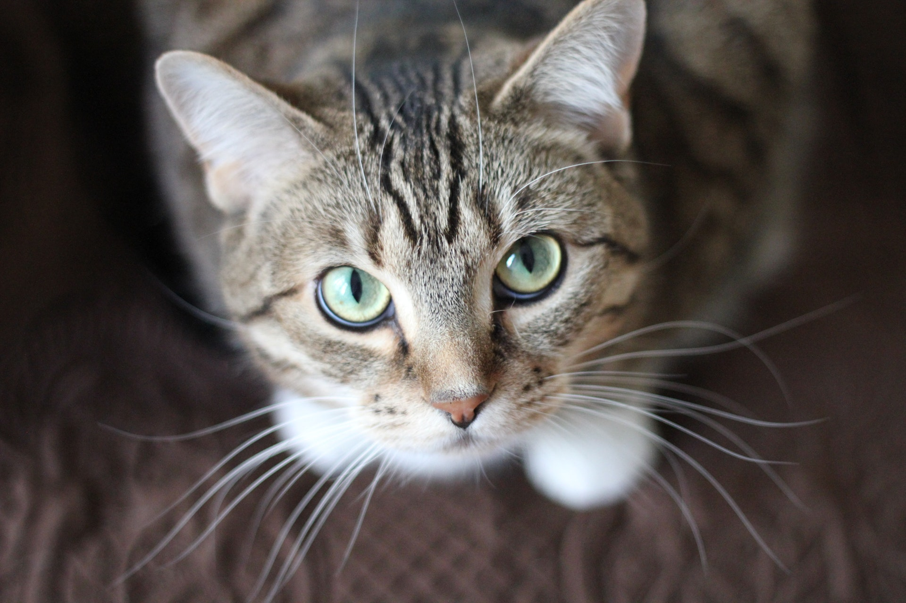
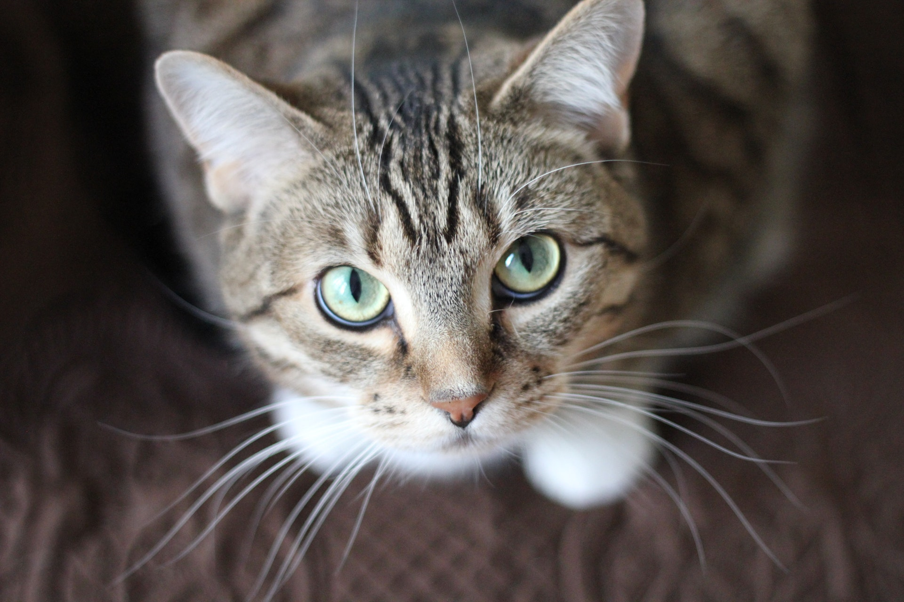
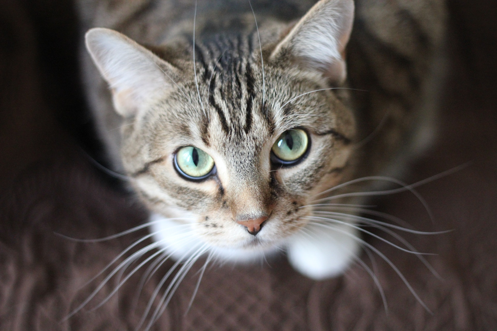
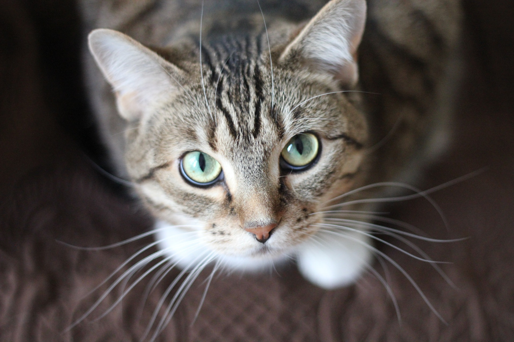

Jak adoptować zwierzaka?
 



Pies jest symbolem bezinteresownej miłości i bezgranicznego oddania. Pies ma prawo do godnego bytu, nie może być ciągle strofowany i karcony. Mając zwierzę w domu należy dokładnie zrozumieć jego biologię oraz wymagania środowiskowe. Dla wielu osób pies jest członkiem rodziny i najlepszym przyjacielem. Dzięki takiemu postrzeganiu przyjaźń człowieka z psem może byc wielka i niezwykła.


Koty są często opisywane jako zwierzęta samotne. W rzeczywistości jednak są z natury towarzyskie. Relacja pomiędzy ludźmi a kotami domowymi przez tysiące lat nabrała cech symbiozy. Kot nie znosi złego traktowania i jest pod tym względem bardzo pamiętliwy. Dobrze traktowany, przywiązuje sie do swego właściciela i na swój sposób okazuje mu przyjazne uczucia.